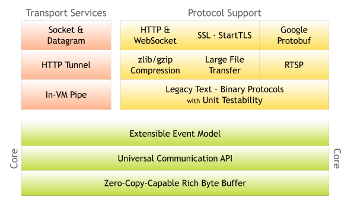

Introduction
Preface 前言
The Problem 问题
The Solution 解决
Getting Started 开始
Before Getting Started 开始之前
Writing a Discard Server 写个抛弃服务器
Looking into the Received Data 查看收到的数据
Writing an Echo Server 写个应答服务器
Writing a Time Server 写个时间服务器
Writing a Time Client 写个时间客户端
Dealing with a Stream-based Transport 处理一个基于流的传输
Speaking in POJO instead of ByteBuf 用POJO代替ByteBuf
Shutting Down Your Application 关闭你的应用
Summary 总结
Architectural Overview 架构总览
Rich Buffer Data Structure 丰富的缓冲实现
Universal Asynchronous I/O API 统一的异步 I/O API
Event Model based on the Interceptor Chain Pattern 基于拦截链模式的事件模型
Advanced Components for More Rapid Development 适用快速开发的高级组件
Summary 总结
Others 其他
Netty 实现聊天功能
Netty 实现 WebSocket 聊天功能
Netty 超时机制及心跳程序实现
Published with GitBook
Architectural Overview 架构总览
Architectural Overview 架构总览

在本章中，我们将研究 Netty 提供的核心功能以及他们是如何构成一个完整的网络应用开发堆栈顶部的核心。你阅读本章时，请把这个图记住。
results matching "
"
No results matching "
"